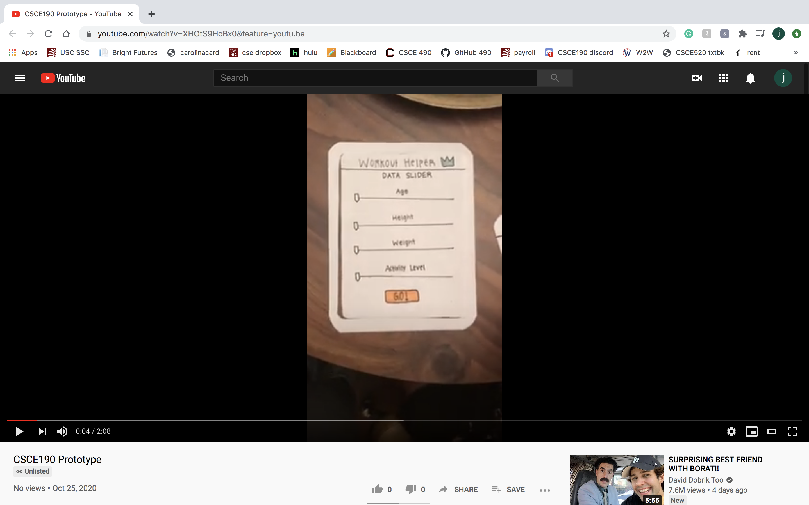
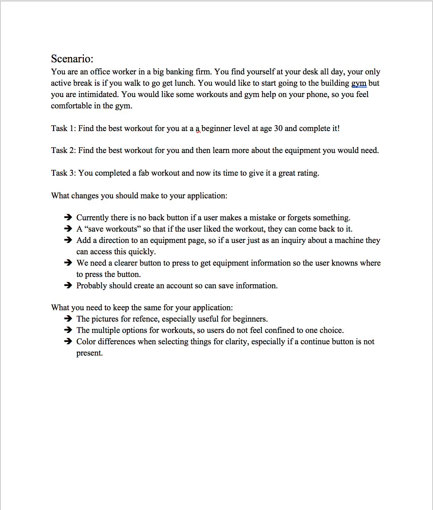
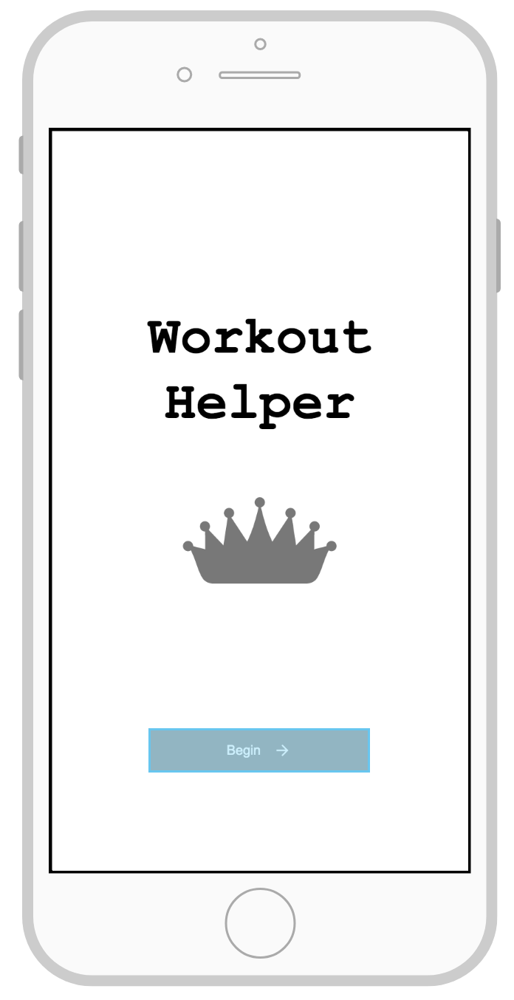
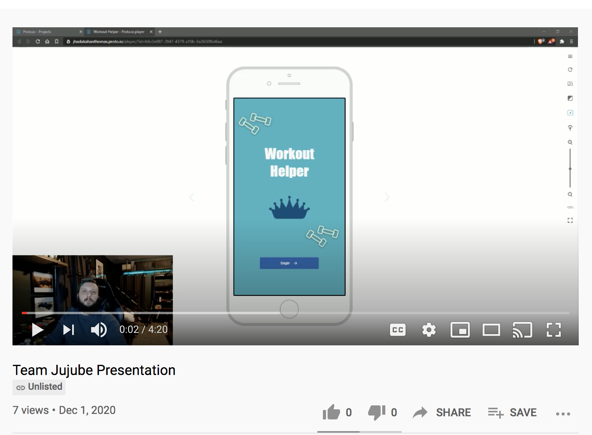

Problem Statement: Workout Helper

People are confused on how to build their workout routines. They come to the local gym confused on how to properly train core muscle groups, handle equipment, or schedule training days with their work schedule. Individuals come to the gym and spend more time trying to figure out how to workout rather than working out.
Affinity Diagram: Workout Helper

Through collaboration, my group and I brainstormed a bunch of ideas, perspectives and information that holds purpose in the fitness, gym environment.
Persona: 4 Personas for Workout Helper (Brynn Saunders)

A persona for a person who could be seen in fitness, gym environment or want to begin to join that environment, but may be a little lost and seeking some guidance.
Storyboard: Brynn Saunders

Realistic situations of people who would greatly benefit from a workout helper app. A few different stories of who those people may be and how the workout helper app will come to the rescue.
Sketches: Workout Helper

Sketches of potential designs for a workout helper app. In hopes to solve the problem of feeling lost when it comes to working out.
Paper Prototype: Workout Helper
A paper prototype of the potential design for a workout helper app. Displays what human interaction would sequentially look like as the app functions.
Usability Testing Script: Workout Helper
A script in order to test the usability of a Worker Helper app. So that an observer can get a feel for their position using the app. This includes feedback regarding how three observers felt trying to use the paper prototype.
Low Fi Prototype: Workout Helper
This is a low fi prototype for a Workout Helper App. This html prototype allows the viewer to try out the functionality of the app and see if it works smoothly.
Hi-Fi Prototype Presentation: Workout Helper
This is a Hi-Fi prototype presentation for a Workout Helper App. This presentation demonstrates user implementation of the hi-fi prototype of a Worker Helper App. This formal demonstration allows the audience to get a real feel for the functioning app.